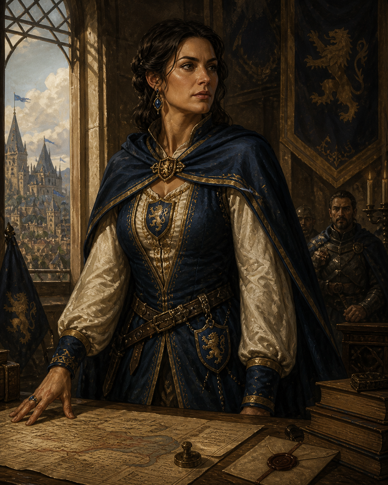

Myrmeen Lhal
Cargo King’s Lord / Lady Lord de Arabel1 Casa / afiliación Casa Lhal; servicio a la Casa Obarskyr; antigua colaboradora e integrante de los Harpers; devota de Tymora23 Raza y clase Humana; exploradora 12/agente Arpista 2 (hoja de 1374 DR) Alineamiento neutral buena4 Edad en 1374 41 años; nacida en 1333 DR3 Fuentes Cormyr (AD&D 2e) · Volo’s Guide to Cormyr · Swords of Eveningstar · Swords of Dragonfire · The Sword Never Sleeps · The Night Parade · Crusade · Tymora’s Luck · Beyond the High Road · Death of the Dragon · The Siege · Elminster’s Daughter · Cormyr: Land of the Purple Dragon · Forgotten Realms Wiki
Myrmeen Lhal conserva la presencia de una aventurera incluso al ejercer el gobierno de Arabel: alta, de ojos azules con motas doradas, acostumbrada a los cueros gastados y a tener la espada preparada. A fines de 1374 DR sigue viva, humana y al frente de la ciudad que ayudó a recuperar después de su caída. Representa a la Corona en un lugar que recuerda su independencia y se resiste a las imposiciones de Suzail. Su autoridad descansa en proteger a los habitantes y al comercio; el respeto que exige tiene un nombre preciso. En Arabel, llamarla simplemente «lady» y omitir «Lord» puede resultar ofensivo.156
El rostro de la She-Dragon
Tiene piernas largas, cintura estrecha, pómulos marcados y labios llenos; la figura entrenada conserva una apariencia juvenil entrada en la cuarentena. Su cabello largo, antes castaño oscuro, aparecía en 1373 casi negro azulado, brillante y atravesado por dos franjas blancas en las sienes. A las antiguas cicatrices del cuerpo, incluidas numerosas marcas de látigo en la espalda, se añadían entonces señales blancas recientes en las manos y otra cicatriz en una mejilla. La guerra de 1370 DR le costó el brazo izquierdo, reemplazado después mediante magia.356
En 1348 llevaba cueros de combate sencillos, gastados y sin adornos; en 1373 usaba cuero parcheado y también una combinación de cuero, malla y placas. Antes de 1369 había viajado con cueros, malla y botas hasta el muslo, y en privado había vestido seda y vestidos. Para las ceremonias, su aspecto era más solemne: tocado de plata con forma de fénix, malla de acero con gemas rojas y espada enjoyada. Dejaba el rostro descubierto. Haverstrom Lhal, su segundo marido, había forjado su espada y su armadura.7
Puede reprender con las manos a la espalda, alzar una ceja o acompañar una observación con una sonrisa contenida. La ironía no suaviza necesariamente la exigencia. Ante una amenaza desenfunda con rapidez; es ambidiestra y se le atribuye disparar una ballesta con cada mano. La guardia y los habitantes conocen el apodo de «the She-Dragon», nacido de una intensidad que alcanza tanto al entrenamiento como al despacho.8
De Calimport al gobierno de Arabel
Infancia y años de ascenso
Nació en 1333 DR en un barrio pobre de Calimport. Su padre era músico de laúd y poeta; su madre confeccionaba artículos textiles. Hacia 1339, cuando tenía seis años, creyó perder a su hermana recién nacida: su madre le dijo que la Night Parade se la había llevado. Aquella explicación alimentó pesadillas. Más adelante, un hombre rico mató a su padre a golpes por interpretar una canción como una provocación, mientras los criados atribuyeron el crimen a ladrones. Los Harpers la ayudaron a llevar al asesino ante la justicia. Burke estuvo entre sus primeros instructores de combate.9
Hay quienes la recuerdan ya como Lady Lord en 1348 DR, recibiendo informes de Dahauntul, trabajando con Thomdor y exigiendo a los Swords of Eveningstar su carta real. También recibió a Dove Silverhand y envió a Dahauntul tras los Knights of Myth Drannor para recuperar bienes robados a Duskur Ebonhawk.10 Otros sitúan su primer matrimonio a los veinte años, hacia 1353, todavía antes de sus aventuras y de su llegada al gobierno. Estas dos cuentas de su juventud se contradicen: la primera la hace gobernante a los quince años; la segunda coloca después los acontecimientos que la llevaron a Arabel.311
Su primer marido fue Dak. Tras un parto difícil, Myrmeen creyó que su hija había muerto; el matrimonio terminó dentro del año siguiente. Abandonó Calimshan y se dedicó a la aventura, colaborando con los Harpers bajo su supervisión antes de pertenecer formalmente a ellos. Lucius Cardoc aseguraba haberla visto combatir por Evermeet. Con Haverstrom Lhal, primo de Azoun IV, compartió más tarde la administración de Arabel y promovió reformas de trabajo, vivienda y asistencia. Tomó de él el apellido. Cuando Haverstrom salió a investigar una conspiración, dejó la ciudad a su cargo; murió en una emboscada y ella reconoció sus restos.211
Tampoco se cuenta de una sola manera su acceso al mando. Unos recuerdan el gobierno compartido con Haverstrom y la responsabilidad que quedó en sus manos tras su muerte; otros, un nombramiento de Azoun, primero al frente de la guarnición y después como gobernante.2 Durante su posterior expedición a Calimport, ya después de 1358 y antes de 1369, ella recordaba ocho años de logros al frente de Arabel y situaba diez años atrás la muerte de Haverstrom. Ninguna de esas cuentas encaja sin dificultad con quienes la recuerdan mandando en 1348.1012
Encargos, cruzada y regreso al sur
Antes de 1358 DR contrató a Cyric, Kelemvor Lyonsbane y Adon para investigar una traición económica. El escape de Ronglath Knightsbridge los implicó en el asunto, y Myrmeen encargó después a la Company of Dawn su captura. El recurso a aventureros formaba parte de su manera de defender los intereses de la ciudad, junto al control de las autorizaciones que les permitían actuar.1013
En 1360 DR ofreció trescientos soldados y treinta magos de Arabel para la cruzada de Azoun contra los Tuigan. Su intervención impulsó los compromisos de otros nobles. Cuando los representantes sembianos rechazaron enviar tropas propias, los amenazó verbalmente. La lealtad al rey se expresaba con efectivos concretos y con una franqueza capaz de incomodar a sus aliados.14
Entre 1358 y 1369 DR, sin un año preciso, Dak reapareció y la búsqueda de su hija llevó a Myrmeen a Calimport. Tenía entonces treinta y cuatro años. Reunió a Burke, Varina, Reisz Roudabush, Elyn y Ord, con Cardoc como apoyo mágico. La expedición la enfrentó a la Night Parade, le permitió rescatar a Krystin y dejó muertos entre sus compañeros. Burke y Varina no regresaron. Reisz sacrificó su vida para apartar del mundo el aparato y la energía destructiva que amenazaban Calimport; Myrmeen terminó reconociendo el amor que sentía por él.1516
Al concluir aquella empresa, Ord le entregó su broche y Myrmeen ingresó formalmente en los Harpers en Twilight Hall, Berdusk. Krystin se convirtió en su hija adoptiva. En 1367 DR, a los treinta y cuatro años, Myrmeen se ocupaba de su crecimiento personal, estudiaba filosofía y procuraba moderar su temperamento. En 1368, Daramos Lauthyr proyectaba pedirle terrenos para la iglesia de Tymora.31617
Guerra y reconstrucción, 1370–1372 DR
En 1370 DR alojó al séquito de Azoun en el palacio urbano de Arabel, mientras las tensiones con los Marliir y la plaga de los campos prolongaban la estancia real. Ese año perdió el brazo izquierdo durante la Guerra Goblin y recibió un reemplazo mágico. En 1371 volvió a quedar al borde de la muerte: resistió a decenas de orcos hasta caer bajo tres atacantes. Los Purple Dragons consiguieron rescatarla y la curación la mantuvo viva. Alusair comprendía el valor político de salvar a la Lord. Arabel cayó y sus habitantes fueron evacuados a Suzail.61819
Myrmeen reunió exploradores, batidores y mercenarios para recuperar la ciudad. La reconquista dispersó a los enemigos supervivientes por los bosques. En Mirtul de 1372 recibió a Alusair, Rivalen, Galaeron, Ruha y Aris en un palacio todavía en reconstrucción. Aceptó de Rivalen la escultura de Aris The Descent of the Shadow Army y al principio acogió favorablemente la ayuda Shadovar. Cuando quedó al descubierto su engaño, participó con Alusair en su expulsión de Arabel y Cormyr.620
Una testigo de la Corona, 1373–1374 DR
En 1373 DR exigió acompañar a Elminster y Caladnei como observadora independiente, capaz de rendir cuentas a la Corona sobre sus actuaciones. Pidió protección frente a manipulaciones mentales antes de continuar. Su relación con Vangerdahast pasó del enfrentamiento y la vigilancia al cuidado, el respeto y el amor: combatió en su defensa y apreció su rechazo a convertirse en tirano. A fines de 1374 conserva su humanidad y el cargo de Lord de Arabel.21
La justicia y el temperamento
Es eficaz, popular y directa; espera sinceridad tanto de los subordinados como de los habitantes. Su preocupación por los necesitados se tradujo en reformas de trabajo, vivienda y asistencia, pero su compasión convive con un temperamento breve y una manera imperiosa de actuar. El estudio de filosofía y la adopción de Krystin acompañaron un esfuerzo consciente por dominar la agresividad y actuar con más misericordia. La disciplina que aplica a otros también le exige trabajo sobre sí misma.123
Busca compañía y afecto, aprecia el arte y los placeres y ha reunido pinturas y esculturas en sus habitaciones. Durante la expedición a Calimport, las tormentas, el abandono y los recuerdos familiares alimentaron sus pesadillas. Las pérdidas explican parte de su dureza y de su necesidad de cercanía. Conserva, sin embargo, criterio para cambiar de juicio: el respeto que llegó a sentir por Vangerdahast creció al verlo renunciar a la coerción y al asesinato.2223
Una jornada entre la espada y el despacho
Su día comienza con entrenamiento para conservar la forma; el ejercicio y la práctica de espada también le habían servido en noches de insomnio. Después atiende despacho y audiencias en el palacio de Arabel, consulta asuntos de seguridad con los mandos operativos y los War Wizards, revisa cuestiones mercantiles y realiza las inspecciones necesarias. El trabajo de gobierno reúne justicia, comercio, protección y autorizaciones de aventureros.124
Ese despacho tiene antecedentes minuciosos. En 1348 recibía informes, estudiaba mapas y revisaba decretos, dispensas, cartas de aventureros y solicitudes de escolta; llegó a exigir una inspección de alcantarillas cada sexto día. Su trato con la ciudad también ha incluido visitas al Hungry Man Inn sin guardaespaldas y conversaciones con Zehla, durante los años de la expedición, además de consultas con Asheyron sobre justicia. El contacto personal forma parte de una autoridad que no se ejerce únicamente desde el tribunal.2425
En su estancia con Vangerdahast en 1373 vigiló sus trabajos, cocinó, limpió y lo obligó a comer y descansar. Aquellos cuidados convivieron con el propósito de observarlo por encargo de la Corona. La misma mujer que exigía explicaciones a los magos podía ocuparse de las necesidades más ordinarias de uno de ellos.26
Aliados, rivalidades y fuerzas de la Lord
La confianza de Azoun IV se apoyaba en su capacidad de ir al centro de los asuntos. Con Alusair mantiene una cooperación estrecha; la regente la llama familiarmente «Mreen» y ha contado con ella como testigo de la Corona. Su lealtad a la Casa Obarskyr debe actuar dentro de una ciudad celosa de su autonomía. Defender los intereses de Arabel y responder ante el reino son responsabilidades que recaen sobre la misma persona.1141821
Entre sus apoyos han destacado Thomdor, amigo y colaborador, y Westar, heraldo y asistente honesto y fiable. Con Dutharr existe una ligera incompatibilidad de carácter. En la organización anterior a la caída de Arabel, Dutharr era el enlace de Thomdor y el jefe de policía efectivo; los oficiales veteranos llevaban el mando operativo de una guarnición que obedecía a la Lord. El Ejército del Este, aunque tenía su base en Arabel, constituía otro mando.27
Los efectivos anteriores a la guerra se recuerdan con cifras distintas. Unos hablan de dos mil Purple Dragons en Arabel;28 otros distinguen una guarnición de mil, incluida la guardia del palacio, un Ejército del Este de mil setecientos —con unos trescientos habitualmente destacados— y una guardia o milicia permanente de doscientos veinte, ampliable mediante una leva máxima de tres mil. Son cuentas de aquella Arabel anterior a su caída.29
Por delegación del rey administró también el contrato de los Red Ravens, que reunían entre cien y trescientos miembros para combatir amenazas en las Stonelands. Orcos, mercenarios y agentes Zhentarim han formado parte de los peligros de esa frontera. El palacio, con tribunal, guardia y habitaciones privadas, es la sede de su autoridad; las fuerzas y los recursos públicos sirven al gobierno de la ciudad.12730
Su devoción a Tymora no la sometió a las pretensiones de Daramos Lauthyr. Disputó con él cuando quiso extender su autoridad religiosa sobre habitantes de otros cultos y obtuvo públicamente una señal de apoyo de la propia diosa. La defensa de la autoridad civil pudo enfrentarla a un sacerdote de su patrona sin quebrar su fe.31
Lo que procura conservar
Myrmeen busca que la población y los comerciantes de Arabel puedan vivir y trabajar con seguridad, sin relegar la asistencia a quienes carecen de recursos. La recuperación de la ciudad fue una victoria necesaria para ese propósito. También exige responsabilidad a quienes manejan poderes capaces de poner en peligro Cormyr: acompañar a los magos, observar y rendir cuentas a la Corona fue para ella una forma concreta de defender el reino.12621
La adopción de Krystin y la voluntad de moderar su carácter dan otra medida de sus aspiraciones. Las pérdidas no han eliminado su búsqueda de amor y compañía. Gobernar, proteger y aprender a ser más misericordiosa son tareas que siguen abiertas a fines de 1374.322
Rumores
En 1372 DR, Galaeron temió que los regalos y la reconstrucción Shadovar estuvieran apartando Arabel de Cormyr; Alusair también puso a prueba la lealtad de Myrmeen. La ayuda extranjera y la antigua autonomía de la ciudad daban peso a la sospecha. Su posterior participación en la expulsión de los Shadovar pertenece a la misma historia.2032
En 1373 DR, Vangerdahast la acusó de gobernar mediante amantes. Lo dijo durante una discusión en la que buscaba provocar a sus visitantes: la acusación llevaba el interés y la hostilidad de aquel momento. Es una imputación contra ella, no una certeza sobre cómo ejerce el mando.33
Estadísticas (D&D 3.5)
Hoja de juego · 1374 DR
| Tamaño/Tipo | Humanoide Mediano (humano) |
|---|---|
| Alineamiento | Neutral bueno |
| Edad | 41 años (nació en 1333) |
| Características | Fue 15, Des 21, Con 14, Int 13, Sab 15, Car 13 |
| Dados de Golpe | (12d8)+(2d6)+28 (110 PG) |
| Iniciativa | +9 |
| Velocidad | 9 m |
| Clase de Armadura | 24, toque 16, desprevenido 20 |
| Ataque base/Presa | +13/+15 |
| Ataque | Longsword +5 (Keen) +20 c/c (1d8+7/17-20) |
| Ataque completo | Longsword +5 (Keen) +20/+15/+10 c/c (1d8+7/17-20); o Masterwork Dagger +16/+11/+6 c/c (1d4+2/19-20); o Masterwork Hand Crossbow +19/+14/+9 a distancia (1d4+1/19-20) |
| Espacio/Alcance | 1,5 m/1,5 m |
| Salvaciones | Fort +12, Ref +15, Vol +13 |
| Dotes | AlertnessYou have finely tuned senses.Unearthed Arcana, p.89, EnduranceYou are capable of amazing feats of stamina. You gain a +4 bonus on checks relating to stamina or extended physical activity. Also, you may sleep in light or medium armor without becoming fatigued.Player's Handbook, p.93, Exotic Weapon Proficiency (Crossbow (Hand))Player's Guide to Faerûn, p.94, Greater Two-Weapon Fighting (Granted)You are a master at fighting two-handed.Complete Champion, p.95, Improved InitiativeYou can react more quickly than normal in a fight.Unearthed Arcana, p.96, Improved Two-Weapon Fighting (Granted)You are an expert in fighting two-handed.Complete Champion, p.96, Iron WillYou have a stronger will than normal. You get a +2 bonus on all Will saving throws.Player's Handbook, p.96, NegotiatorYou are good at gauging and swaying attitudes.Player's Guide to Faerûn, p.98, Point Blank ShotYou are skilled at making well-placed shots with ranged weapons at close range.Complete Champion, p.98, Precise ShotYou are skilled at timing and aiming ranged attacks.Complete Champion, p.98, Rapid Reload (Crossbow (Hand))Choose a type of crossbow (hand, light, or heavy). You can reload a crossbow of that type more quickly than normal. The time required for you to reload your chosen type of crossbow is reduced to a free action (for a hand or light crossbow) or a move action (for a heavy crossbow). Reloading a crossbow still provokes…Player's Handbook, p.99, TrackYou can follow the trails of creatures and characters across most types of terrain.Player's Guide to Faerûn, p.101, Two-Weapon DefenseYour two-weapon fighting style bolsters your defense as well as your offense.Complete Champion, p.102, Two-Weapon Fighting (Granted)You can fight with a weapon in each hand. You can make one extra attack each round with the second weapon. -2 to all attacks (offhand weapon must be light)Player's Handbook, p.102 |
| Habilidades | Averiguar intencionesDetectar mentiras e intenciones ocultas.6 rangos · Sab +10, AvistarAdvertir lo que está a la vista.15 rangos · Sab +19, BuscarEncontrar detalles ocultos, puertas secretas y trampas.8 rangos · Int +9, DiplomaciaNegociar, persuadir y cambiar la actitud de los demás.8 rangos · Car +11, EngañarEngañar, mentir de forma convincente y fintar en combate.4 rangos · Car +5, EsconderseOcultarse a la vista.15 rangos · Des +19, EscucharOír ruidos y conversaciones.15 rangos · Sab +19, MontarMontar y combatir a caballo.8 rangos · Des +13, Moverse sigilosamenteMoverse sin hacer ruido.15 rangos · Des +24, Reunir informaciónAveriguar rumores y noticias recorriendo tabernas y mercados.6 rangos · Car +9, Saber (local)Saber erudito de un campo concreto.8 rangos · Int +9, SupervivenciaOrientarse, rastrear y sobrevivir en la naturaleza.12 rangos · Sab +14 |
| Cualidades especiales | Animal Companion (Ex)At 4th level, a ranger gains an animal companion selected from the following list: badger, camel, dire rat, dog, riding dog, eagle, hawk, horse (light or heavy), owl, pony, snake (Small or Medium viper), or wolf. If the DM's campaign takes place wholly or partly in an aquatic environment, the DM may add the…Player's Handbook, p.48, Deneir's Eye (Su)At 2nd level, the Harper agent gains a +3 sacred bonus on saving throws against glyphs, runes, and symbols.Player's Guide to Faerûn, p.59, Harper Knowledge (Ex)At 1st level, the Harper agent can access knowledge in the same manner as a bard can. This ability functions like the bardic knowledge ability, except that the bonus for the check equals the character's Harper agent level + her Int modifier. If the Harper agent has another such lore ability from another source…Player's Guide to Faerûn, p.59, Lliira's Heart ( Su)At 2nd level, the Harper agent gains a +2 sacred bonus on saving throws against compulsion and fear effects.Player's Guide to Faerûn, p.59, Combat Style (Ex)At 2nd level, a ranger must select one of two combat styles to pursue: archery or two-weapon combat. This choice affects the character's class features but does not restrict his selection of feats or special abilities in any way. If the ranger selects archery, he is treated as having the Rapid Shot feat, even if he…Player's Handbook, p.48, Combat Style Mastery (Ex)At 11th level, a ranger's aptitude in his chosen combat style (archery or two-weapon combat) improves again. If he selected archery at 2nd level, he is treated as having the Improved Precise Shot feat (page 96), even if he does not have the normal prerequisites for that feat. If the ranger selected two-weapon…Player's Handbook, p.48, Evasion (Ex)At 9th level, a ranger can avoid even magical and unusual attacks with great agility. If he makes a successful Reflex saving throw against an attack that normally deals half damage on a successful save (such as a red dragon's fiery breath or a fireball), he instead takes no damage. Evasion can be used only if the…Player's Handbook, p.48, Favored Enemy (Ex)At 1st level, a ranger may select a type of creature from among those given on Table 3-14: Ranger Favored Enemies. Due to his extensive study on his chosen type of foe and training in the proper techniques for combating such creatures, the ranger gains a +2 bonus on Bluff, Listen, Sense Motive, Spot, and Survival…Player's Handbook, p.47, Improved Combat Style (Ex)At 6th level, a ranger's aptitude in his chosen combat style (archery or two-weapon combat) improves. If he selected archery at 2nd level, he is treated as having the Manyshot feat (page 97), even if he does not have the normal prerequisites for that feat. If the ranger selected two-weapon combat at 2nd level, he…Player's Handbook, p.48, Swift Tracker (Ex)Beginning at 8th level, a ranger can move at his normal speed while following tracks without taking the normal -5 penalty. He takes only a -10 penalty (instead of the normal -20) when moving at up to twice normal speed while tracking.Player's Handbook, p.48, Two-Weapon Fighting Combat StylePlayer's Handbook, Wild Empathy +13Player's Handbook, Woodland Stride (Ex)Starting at 7th level, a ranger may move through any sort of undergrowth (such as natural thorns, briars, overgrown areas, and similar terrain) at his normal speed and without taking damage or suffering any other impairment. However, thorns, briars, and overgrown areas that are enchanted or magically manipulated to…Player's Handbook, p.48 |
| Idiomas | Chondathan, Common, Elven |
| Deidad | Tymora |
1.º: LongstriderIncreases your speed.Personal, Resist EnergyIgnores first ((1+(min(floor(max(CASTERLEVEL-3,1)/4),2)))*10) points of damage/attack from specified energy type.CD 13 · Touch · Fortitude negates (harmless), Speak with AnimalsYou can communicate with animals.Personal; 2.º: BarkskinGrants +(min(max(CASTERLEVEL/3+1,2),5)) enhancement to natural armor.Touch, Cat's GraceSubject gains +4 to Dex for (CASTERLEVEL) minutes.CD 14 · Touch · Will negates (harmless); 3.º: Neutralize PoisonImmunizes subject against poison, detoxifies venom in or on subject.CD 15 · Touch · Will negates (harmless, object)
Longsword +5 (Keen)threat range doubledPersonalizado - Wizards of the Coast - Player's Handbook, p.119, Masterwork DaggerPersonalizado - Wizards of the Coast - Player's Handbook, p.116, Masterwork Hand CrossbowLoading a hand crossbow is a move action that provokes attacks of opportunity. You can shoot but not load, a hand crossbow with one hand at no penalty.Personalizado - Wizards of the Coast - Player's Handbook, p.115, Masterwork Hand Crossbow (2)Loading a hand crossbow is a move action that provokes attacks of opportunity. You can shoot but not load, a hand crossbow with one hand at no penalty.Personalizado - Wizards of the Coast - Player's Handbook, p.115, Chain Shirt +3A chain shirt protects your torso while leaving your limbs free and mobile. It includes a layer of quilted fabric worn underneath to prevent chafing and to cushion the impact of blows. A chain shirt comes with a steel cap.Personalizado - Wizards of the Coast - Player's Handbook, p.124, Ring of Protection +2This ring offers continual magical protection in the form of a deflection bonus of +2 to AC. Faint abjuration; CL 5thDungeon Master's Guide, p.232, Cloak of Resistance +2These garments offer magic protection in the form of a +2 resistance bonus on all saving throws (Fortitude, Reflex, and Will). Faint abjuration; CL 5thDungeon Master's Guide, p.253, Gloves of Dexterity +2Dexterity: These thin leather gloves are very flexible and allow for delicate manipulation. They add to the wearer's Dexterity score in the form of an enhancement bonus of +2. Both gloves must be worn for the magic to be effective. Moderate transmutation; CL 8thDungeon Master's Guide, p.257, Boots of ElvenkindThese soft boots enable the wearer to move quietly in virtually any surroundings, granting a +5 competence bonus on Move Silently checks. Faint transmutation; CL 5thDungeon Master's Guide, p.249, Commander's Ringsense direction and distance of any Purple Dragon Rings within 100-ft radius.Magic of Faerûn
Hoja calculada con PCGen (D&D 3.5) · 1374 DR · descargar .pcg
Secretos (DM)
Dak y la hija perdida. Cuando Dak reapareció detenido por asesinato, Myrmeen supo que había entregado a su hija para saldar una deuda y le había hecho creer que había muerto. Lo decapitó en un arrebato y ordenó a Evon Stralana, entonces ministro de defensa, retirar y quemar los restos en secreto. La gobernante preocupada por la justicia había ejecutado personalmente al hombre que la engañó.34
La hermana y el aparato. Tamara, la hermana que Myrmeen creía perdida, había sido vendida cuando parecía próxima a morir para que su madre pudiera alimentar a Myrmeen. La Night Parade la transformó mediante su aparato. Antes de morir reveló el parentesco y el destino de la hija verdadera: ella y Zeal habían salvado a la niña de aquella transformación al entregarla a los Argreeves. Myrmeen venció y mató a Lord Sixx dentro del enfrentamiento mental creado por él. Reisz apartó después el aparato y su energía a costa de su vida. Ella temió que una entidad semejante a un ojo hubiera visto su rostro y pudiera vengarse; ese miedo quedó como parte de lo que la expedición dejó en ella.3536
Lynelle y Krystin. La hija biológica era Lynelle Argreeves, criada por Pholuros y Mia en Suldolphor. Myrmeen la encontró feliz y decidió ocultar la maternidad; justificó su visita con una petición de poemas de su propio padre. Krystin había sido colocada junto a ella por Sixx para hacerse pasar por su hija y facilitar la toma de Arabel después de una muerte preparada de la Lord. La joven confesó el engaño. El plan terminó con la muerte de Sixx, pero la relación maternal sobrevivió: Myrmeen adoptó a Krystin.3738
La ausencia encubierta. Elyn la sustituyó durante la expedición mediante el amuleto que reproduce su apariencia y su voz sin cambiar la ropa del portador; una doncella había intervenido antes en un engaño semejante. En Calimport, el grupo preparó depósitos de oro, armas y documentación falsa. Cardoc, aliado mágico y atracción afectiva de Myrmeen, los traicionó por miedo a lo que pudiera ocurrirle a él y a su familia. Elyn siguió ayudándola en aventuras de incógnito. Old Ghost había incluido su asesinato en un plan para debilitar Cormyr en 1348 DR.394041
Los Moonstars. Tras su etapa Harper pasó a los Moonstars, los Tel Teukiira de Khelben Arunsun, entre cuyos agentes destacados se cuenta a fines de 1374. Conserva el broche sin que ello implique pertenecer simultáneamente a ambas organizaciones. Reserva tiempo para recibir y remitir información, además de sus obligaciones de gobierno y familia.164243
Vangerdahast, los guardianes y Ganrion. En 1373 conoció el proyecto de guardianes dragones de Vangerdahast y la propuesta de transformarlo en guardián con Joysil. Eligió seguir siendo humana y se ofreció a tener y criar a su heredero para que pudiera formarse como mago leal al reino. Ganrahast es hijo de ambos; el nombre inicial Ganrion sirvió para ocultar la paternidad. Hay quienes sitúan su nacimiento en 1373 DR;44 otros lo hacen en 1372.45 A fines de 1374 es un niño de aproximadamente uno o dos años, cuya crianza ocupa parte del tiempo de Myrmeen.4445
Después de 1374
Hacia 1379 DR, deseosa de retirarse del gobierno, Myrmeen trasladará su casa a Suzail para estar cerca de Krystin y de su nieta Nalara. Al principio lo hará sin autorización de la Corona y dejará a Westar al frente de Arabel mientras se busca un reemplazo. Esta decisión se sitúa unos siete años después del nacimiento de su hijo.45
En 1399 DR, Laspeera comenzará a instruir a Ganrahast para las funciones de Mago Real.46
Footnotes
-
Cormyr (AD&D 2e), p. 18 · Cormyr (AD&D 2e), p. 40 · Volo’s Guide to Cormyr, p. 15 · Volo’s Guide to Cormyr, p. 54. ↩ ↩2 ↩3 ↩4 ↩5 ↩6 ↩7
-
The Night Parade, p. 25 · The Night Parade, p. 176 · The Night Parade, pp. 244–245 · Forgotten Realms Wiki → Heroes’ Lorebook p.91. ↩ ↩2 ↩3 ↩4 ↩5
-
Forgotten Realms Wiki → The Code of the Harpers p.57 · Forgotten Realms Wiki → Heroes’ Lorebook pp.90–91 · The Night Parade, pp. 1–3. ↩ ↩2 ↩3 ↩4 ↩5 ↩6 ↩7
-
Forgotten Realms Wiki → FRCS 3e p.112 · CSW p.76 · Cormyr (AD&D 2e), p. 18 · Volo’s Guide to Cormyr, p. 54 · Forgotten Realms Wiki → Heroes’ Lorebook p.90. Base de juego R12, NG; ampliación propuesta por decisión del usuario: R12/Harper Agent 2, nivel 14. La noticia de R13 en «After the Dragon», Dragon Magazine Annual 2000, llega por Forgotten Realms Wiki sin página aportada. ↩
-
The Night Parade, pp. 2–3 · The Night Parade, pp. 161–162 · The Siege, p. 187 · Elminster’s Daughter, p. 123 · Forgotten Realms Wiki → Heroes’ Lorebook p.90. ↩ ↩2
-
Forgotten Realms Wiki → FRCS 3e p.112 · Cormyr: Land of the Purple Dragon, p. 43 · Elminster’s Daughter, pp. 283, 286. Pérdida del brazo en 1370 DR y continuidad humana al presente adoptadas en la canónica. ↩ ↩2 ↩3 ↩4 ↩5
-
Swords of Eveningstar, pp. 140, 148 · Swords of Dragonfire, p. 44 · The Night Parade, pp. 2–3, 33, 176, 244 · Elminster’s Daughter, pp. 151, 164 · Forgotten Realms Wiki → Heroes’ Lorebook p.90. ↩
-
Swords of Eveningstar, pp. 140–141, 148, 155 · Elminster’s Daughter, pp. 123, 141 · Forgotten Realms Wiki → Heroes’ Lorebook p.90. ↩
-
The Night Parade, pp. 1, 4, 77, 80, 176, 257 · Forgotten Realms Wiki → The Code of the Harpers p.57 · Forgotten Realms Wiki → Heroes’ Lorebook p.91. ↩
-
Swords of Eveningstar, pp. 140–141, 148, 182–183 · Swords of Dragonfire, pp. 44, 65. ↩ ↩2 ↩3
-
The Night Parade, pp. 2, 5–6, 21 · Forgotten Realms Wiki → Heroes’ Lorebook p.91. ↩ ↩2
-
The Night Parade, pp. 8–9, 25, 160. La canónica descarta como fecha firme el acceso poco después de 1352 calculado en Forgotten Realms Wiki a partir de Gondegal y de una antigüedad aproximada; Forgotten Realms Wiki → Heroes’ Lorebook pp.90–91 y Cormyr: Land of the Purple Dragon, p. 15 no fijan por sí solos esa fecha de acceso. ↩
-
Forgotten Realms Wiki → Shadowdale pp.30–31, 87–89, 238 · The Night Parade, p. 8. ↩
-
The Night Parade, pp. 1, 8–11, 14, 171, 196, 199. ↩
-
The Night Parade, pp. 249–254, 256, 258 · Forgotten Realms Wiki → Heroes’ Lorebook p.91. ↩ ↩2 ↩3
-
Tymora’s Luck, p. 113. ↩
-
Death of the Dragon, pp. 184–185 · Cormyr: Land of the Purple Dragon, pp. 15, 43. ↩
-
The Siege, pp. 184–185, 187, 189, 191, 203 · Forgotten Realms Wiki → The Siege pp.429–435. ↩ ↩2
-
Elminster’s Daughter, pp. 123–126, 150, 205, 239–241, 258–260, 283, 286. ↩ ↩2 ↩3
-
The Night Parade, pp. 1, 160, 176–178, 196, 244–245, 257–258 · Forgotten Realms Wiki → The Code of the Harpers p.57. ↩ ↩2
-
Elminster’s Daughter, pp. 240–241, 258–259. ↩
-
The Night Parade, pp. 3, 29 · Swords of Eveningstar, pp. 140–141, 148, 155 · Volo’s Guide to Cormyr, pp. 55–56. La rutina de 1374 es una inferencia autorizada por la canónica a partir de hábitos y funciones. ↩ ↩2
-
The Night Parade, pp. 7–8 · Volo’s Guide to Cormyr, p. 218. ↩
-
Elminster’s Daughter, pp. 150, 195, 202, 204–206. ↩
-
Cormyr (AD&D 2e), p. 18 · Volo’s Guide to Cormyr, pp. 55–56. ↩ ↩2
-
Cormyr (AD&D 2e), p. 68. ↩
-
Volo’s Guide to Cormyr, p. 56. ↩
-
The Night Parade, pp. 1–3, 7 · The Siege, pp. 184–185. ↩
-
Volo’s Guide to Cormyr, p. 57 · Forgotten Realms Wiki → Heroes’ Lorebook p.91 · Forgotten Realms Wiki → City of Splendors: Waterdeep p.76. ↩
-
The Siege, pp. 184, 187–188. ↩
-
Elminster’s Daughter, pp. 143–144. ↩
-
The Night Parade, pp. 1–2, 5–8. ↩
-
The Night Parade, pp. 233–235, 244–245, 249–252. ↩
-
The Night Parade, pp. 4, 233–235, 251. ↩
-
The Night Parade, pp. 234, 255–258. ↩
-
The Night Parade, pp. 171, 196, 199, 245, 258 · Forgotten Realms Wiki → Heroes’ Lorebook p.91. ↩
-
The Night Parade, p. 10 · Forgotten Realms Wiki → Heroes’ Lorebook p.90 · PHB p.222 · DMG pp.258, 282. Parámetros y precio del amuleto: adaptación singular provisional. ↩
-
The Night Parade, pp. 8–11, 14, 196, 254 · Forgotten Realms Wiki → Heroes’ Lorebook p.90. ↩
-
The Sword Never Sleeps, p. 81. ↩
-
Forgotten Realms Wiki → Cloak & Dagger p.28 · Forgotten Realms Wiki → City of Splendors: Waterdeep p.76 · The Night Parade, p. 256. Afiliación Moonstar en 1374 adoptada en la canónica. Se retira la antigua afirmación de bloqueo de avance Harper, procedente de una consulta web no válida y sin respaldo en el material local cotejado. Los dos niveles añadidos son una decisión de campaña, sin cronología de ascensos publicada. ↩
-
Forgotten Realms Wiki → Heroes’ Lorebook p.90 · The Night Parade, pp. 3, 253 · Mag p.159 · DMG pp.127, 225. Broche menor, keen y tasaciones son decisiones de la reconstrucción; los folios generales indicados requieren cotejo. ↩
-
Elminster’s Daughter, pp. 124, 260, 282–283 · Cormyr: Land of the Purple Dragon, p. 15. Nacimiento en 1373 DR; continuidad de la crianza en 1374 inferida en la canónica. ↩ ↩2
-
Forgotten Realms Wiki → Dungeon 198, Cormyr Royale pp.47–48 · Elminster’s Daughter, p. 283 · Cormyr: Land of the Purple Dragon, p. 15. El retiro hacia 1379, unos siete años después del nacimiento, permite deducir 1372; entra en conflicto con 1373. Se conserva la discrepancia. ↩ ↩2 ↩3
-
Cormyr: Land of the Purple Dragon, p. 16; dato exclusivo de esta referencia, referido al comienzo de la instrucción. Cormyr: Land of the Purple Dragon, pp. 17, 43 describe además la Arabel tardía y el ataque de Lady Marsheena: ese material no se incorpora a la vida de Myrmeen en 1374. ↩